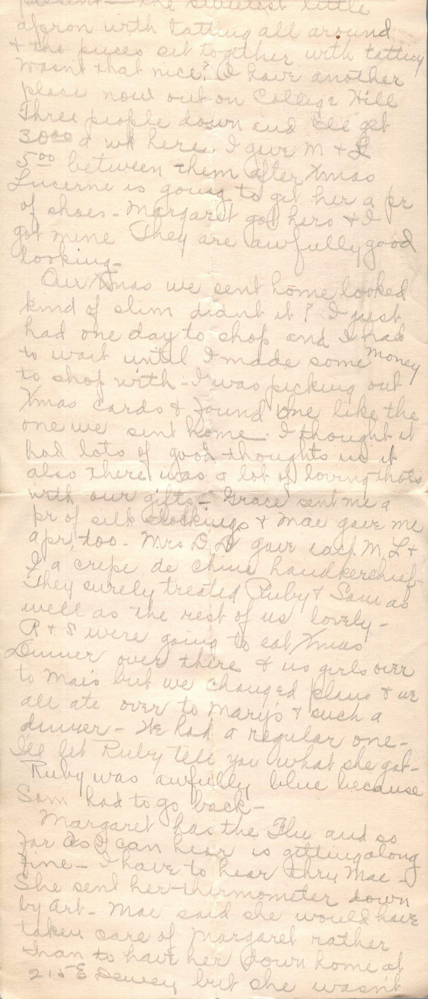
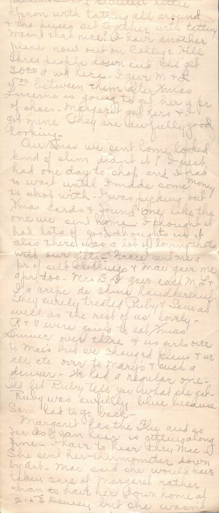

From: Bess Chandler, To: Elijah H. Chandler and Family
 
From: Bess Chandler, To: Elijah H. Chandler and Family
Sunday Dearest Papa, Mama, and all, Sure do thank you for then five. Came in handy but I want you to know I earned the money to pay for my Xmas presents. Got $22 for my first case of nursing. No I didn't either, Mae gave me $10.00 for staying with her. I didn't want to take that but she just insisted and as I was altogether broke it looked awfully good. Then at Temps I stayed one week and 3 days for $22. Didn't have anything to do but take care of the little girl. They treated me fine and invited me to stay over Xmas with them and eat turkey dinner but I wanted to eat with the girls. When I left the little girl I was nursing gave me an Xmas present. The sweetest little apron with tattling all around the the pieces set together with tatting wasn't that nice? I have another place now out on College Hill. Three people down and I'll get $30.00 a week here. I gave M & L $5.00 between them after Xmas. Lucerne is going to get her a pair of shoes. Margaret got hers and I got mine. They are awfully good looking. Our Xmas we sent home looked kind of slim didn't it? I just had one day to shop and I had to wait until I made some money to shop with. I was picking out Xmas cards and found one like the one we sent home. I thought it had lots of good thoughts and it also there was a lot of loving thoughts with out gifts. Grace sent me a pair of silk stockings and Mae gave me a pair too. Mrs. D.D. gave each M, L, and I a drop de china handkerchief. They surely treated Ruby and Sam as well as the rest of us lovely- R & S were going to eat Xmas dinner over there and us girls over to Mae's but we changed plans and we all ate over to Mary's and such a dinner. We had a regular one - I'll let Ruby tell you what she got. Ruby was awfully blue because Sam had to go back. Margaret has the flu and so far as I can hear is getting along fine. I have to hear thru Mae - She sent her thermometer down by Art. Mae said she would have taken care of Margaret rather than to have her down home at 215 E Dewey but she wasn't strong yet herself. If Ruby and Lucerne need me I'm willing and ready to go but I thought $30.00 isn't picked up every week. Do you hear anything from Martin? Bet he;s anxious to get home. Sure was glad to hear you were all better at home. Ruby, M, and L gave me a flowered petticoat and some handkerchiefs. Think I've told you everything Old Santa brought me now. I made Art and the boys a plate of homemade candy and have Mae a pair of Manicure scissors. When did the things arrive home? The girls hadn't done any shopping to speak of and M and I did most of it Xmas Eve day. The day I went home from Temps. The baby is getting along fine and Ruby looks well. Hope to hear from you soon Love, Bess